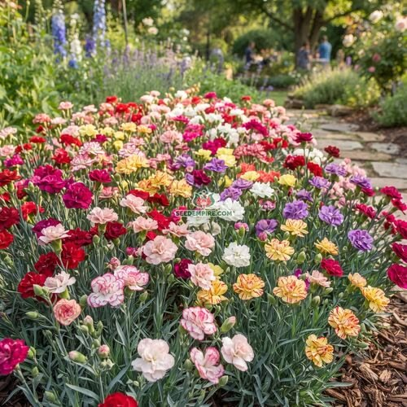
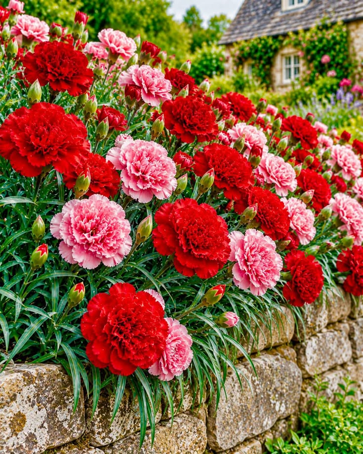
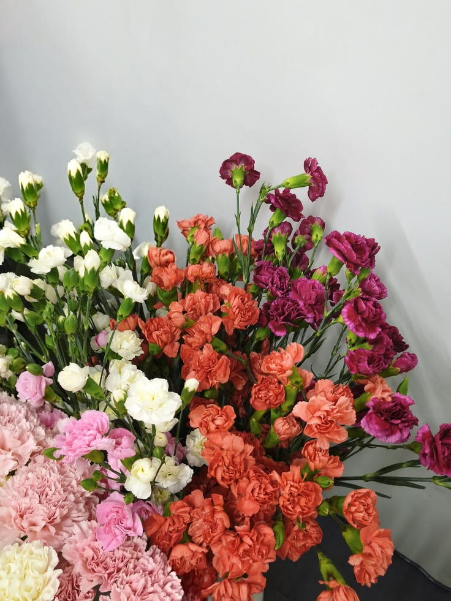
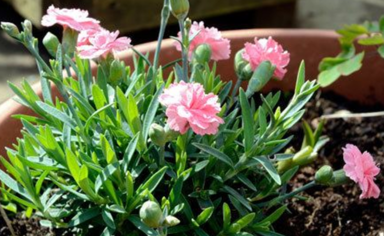
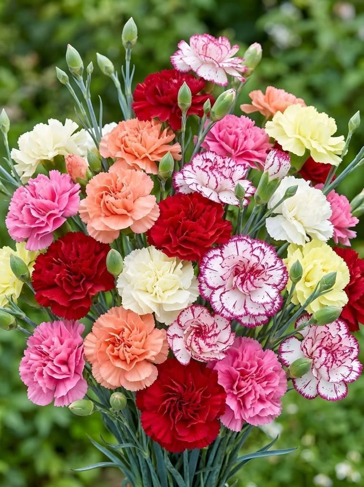
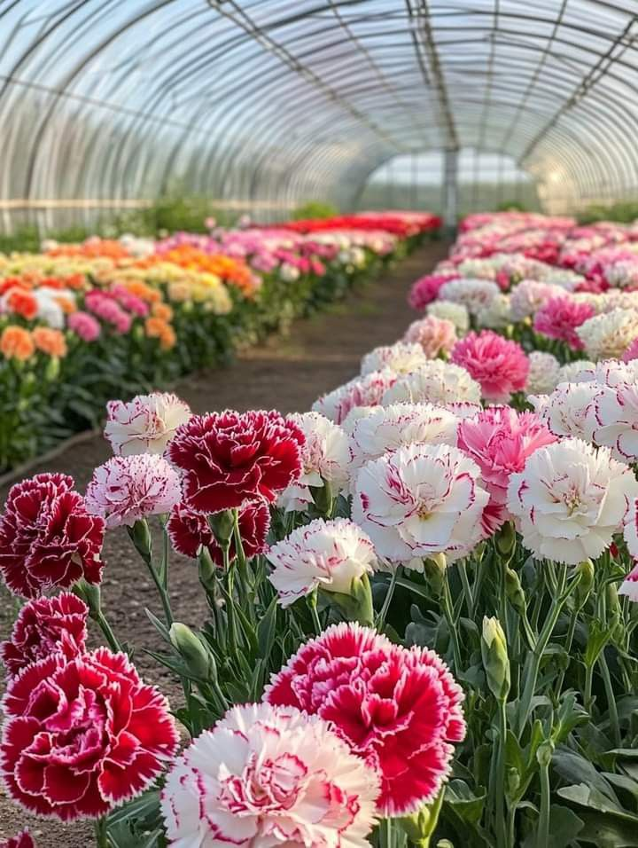

Carnation
Dianthus caryophyllus
Carnations are admired for their ruffled petals, rich colors, and long-lasting blooms. They are popular in gardens and floral arrangements.

Dianthus caryophyllus
Carnations are admired for their ruffled petals, rich colors, and long-lasting blooms. They are popular in gardens and floral arrangements.

Carnation, scientifically known as Dianthus caryophyllus, is a flowering plant in the Caryophyllaceae family.
It is believed to have originated in the Mediterranean region and has been cultivated for centuries. Carnations are widely grown as ornamental flowers.
Their distinctive ruffled petals and wide range of colors make them popular in gardens, bouquets, and floral arrangements.
Carnations are available in different forms and flower colors.

Usually produces one large flower on each stem.

Produces several smaller flowers on branching stems.

Compact plants with smaller flowers, suitable for containers and gardens.

Pink, red, white, yellow, purple, and many mixed or striped colors.
Many carnations have a light, sweet, or spicy fragrance.
Carnations are generally perennial plants, although some are grown as short-lived plants.
Flowers can last for several weeks on the plant in suitable conditions. Cut flowers can also last a relatively long time in a vase.
Prefers full sunlight and good air circulation.
Well-drained, fertile soil is suitable for growing carnations.
Water when the soil begins to dry. Avoid excessive moisture.
Generally prefers mild conditions and may struggle in extreme heat.
Can be propagated through stem cuttings and seeds.

Carnations need sunlight, well-drained soil, and regular care to produce healthy flowers.
Water the soil rather than the leaves. Allow excess water to drain away to reduce the risk of root problems.
Remove faded flowers and dead stems to encourage further growth.
Apply a balanced fertilizer during active growth, following the label instructions.
Check for aphids and fungal problems. Provide good air circulation and avoid overwatering.
Discover more flowers with distinctive petals and beautiful colors.